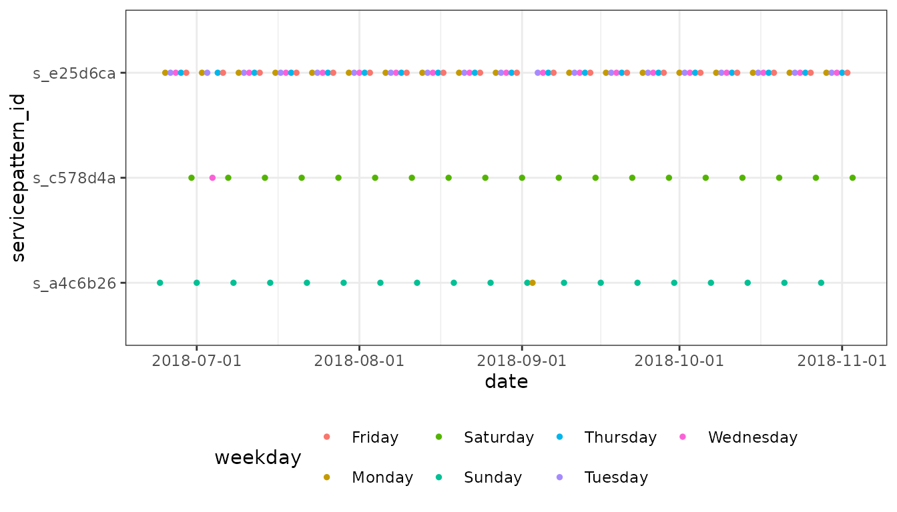
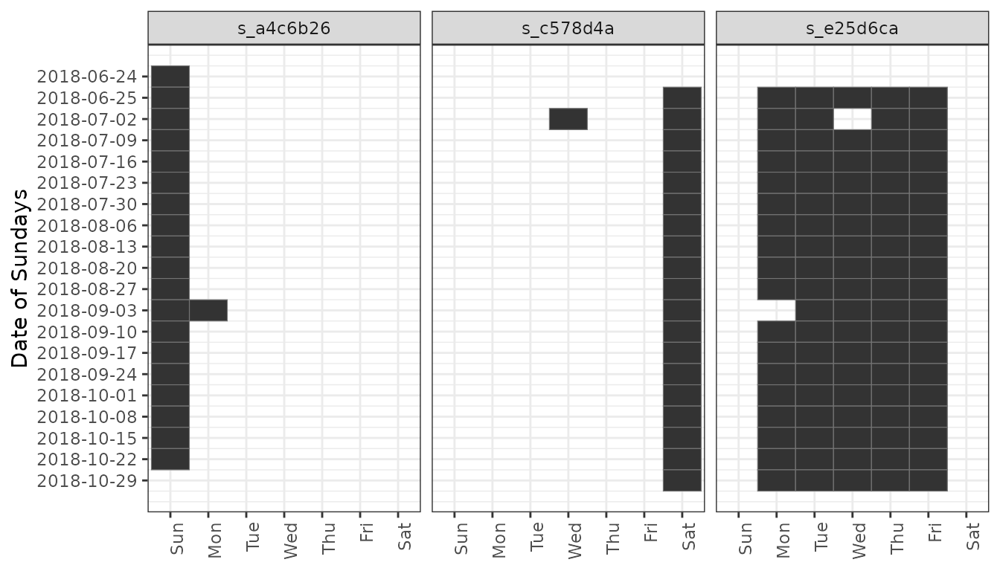
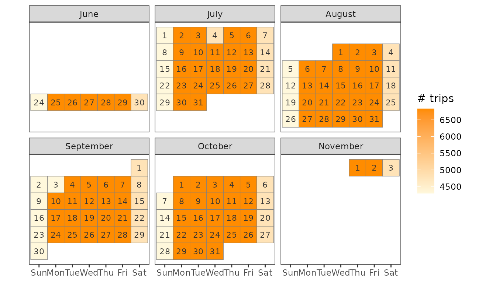

vignettes/servicepatterns.Rmd
servicepatterns.RmdEach trip in a GTFS feed is referenced to a service_id (in trips.txt). The GTFS reference specifies that a “service_id contains an ID that uniquely identifies a set of dates when service is available for one or more routes”. A service could run on every weekday or only on Saturdays for example. Other possible services run only on holidays during a year, independent of weekdays. However, feeds are not required to indicate anything with service_ids and some feeds even use a unique service_id for each trip and day. In this vignette we’ll look at a general way to gather information on when trips run by using “service patterns”.
Service patterns can be used to find a typical day for further analysis like routing or trip frequencies for different days.
We use a feed from the New York Metropolitan Transportation Authority. It is provided as a sample feed with tidytransit but you can read it directly from the MTA’s website.
local_gtfs_path <- system.file("extdata", "google_transit_nyc_subway.zip", package = "tidytransit")
gtfs <- read_gtfs(local_gtfs_path)
# gtfs <- read_gtfs("http://web.mta.info/developers/data/nyct/subway/google_transit.zip")With set_date_service_table() we add a table to the feed that indicates which service_id runs on which date. This is later useful for linking dates and trips via service_id.
gtfs <- set_date_service_table(gtfs)
head(gtfs$.$date_service_table)## # A tibble: 6 x 2
## date service_id
## <date> <chr>
## 1 2018-06-24 ASP18GEN-1037-Sunday-00
## 2 2018-06-24 ASP18GEN-2048-Sunday-00
## 3 2018-06-24 ASP18GEN-3041-Sunday-00
## 4 2018-06-24 ASP18GEN-4049-Sunday-00
## 5 2018-06-24 ASP18GEN-5048-Sunday-00
## 6 2018-06-24 ASP18GEN-6030-Sunday-00To understand service patterns better we need information on weekdays and holidays. With a calendar table we know the weekday and possible holidays for each date. We’ll use a minimal example with two holidays.
holidays = tribble(~date, ~holiday,
ymd("2018-07-04"), "Independence Day",
ymd("2018-09-03"), "Labor Day")
calendar = tibble(date = unique(gtfs$.$date_service_table$date)) %>%
mutate(
weekday = (function(date) {
c("Sunday", "Monday", "Tuesday",
"Wednesday", "Thursday", "Friday",
"Saturday")[as.POSIXlt(date)$wday + 1]
})(date)
)
calendar <- calendar %>% left_join(holidays, by = "date")
head(calendar)## # A tibble: 6 x 3
## date weekday holiday
## <date> <chr> <chr>
## 1 2018-06-24 Sunday <NA>
## 2 2018-06-25 Monday <NA>
## 3 2018-06-26 Tuesday <NA>
## 4 2018-06-27 Wednesday <NA>
## 5 2018-06-28 Thursday <NA>
## 6 2018-06-29 Friday <NA>To analyse on which dates trips run and to group similar services we use service patterns. Such a pattern simply lists all dates a trip runs on. For example, a trip with a pattern like 2019-03-07, 2019-03-14, 2019-03-21, 2019-03-28 runs every Thursday in March 2019. To handle these patterns we create a servicepattern_id using a hash function. Ideally there are the same number of servicepattern_ids and service_ids. However, in real life feeds this is rarely the case. In addition, the usability of service patterns depends largely on the feed and its complexity.
gtfs <- set_servicepattern(gtfs)Our gtfs feed now contains the data frame service_pattern which links each servicepattern_id to an existing service_id (and by extension trip_id).
head(gtfs$.$service_pattern)## # A tibble: 6 x 2
## service_id servicepattern_id
## <chr> <chr>
## 1 ASP18GEN-1037-Sunday-00 s_a4c6b26
## 2 ASP18GEN-1038-Saturday-00 s_c578d4a
## 3 ASP18GEN-1087-Weekday-00 s_e25d6ca
## 4 ASP18GEN-2042-Saturday-00 s_c578d4a
## 5 ASP18GEN-2048-Sunday-00 s_a4c6b26
## 6 ASP18GEN-2097-Weekday-00 s_e25d6caIn addition, gtfs$.$date_servicepattern_table has been created which connects dates and service patterns (like date_service_table). We can compare the number of service patterns to the number of services.
# service ids used
n_services <- length(unique(gtfs$trips$service_id)) # 70
# unique date patterns
n_servicepatterns <- length(unique(gtfs$.$service_pattern$servicepattern_id)) # 7The feed uses 70 service_ids but there are actually only 7 different date patterns. Other feeds might not have such low numbers, for example the Swiss GTFS feed uses around 15’600 service_ids which all identify unique date patterns.
We’ll now try to figure out usable names for those patterns. A good way to start is visualising the data.
date_servicepattern_table <- gtfs$.$date_servicepattern_table %>% left_join(calendar, by = "date")
ggplot(date_servicepattern_table) + theme_bw() +
geom_point(aes(x = date, y = servicepattern_id, color = weekday), size = 1) +
scale_x_date(breaks = scales::date_breaks("1 month")) + theme(legend.position = "bottom")
The plot shows that pattern s_128de43 runs on every Sunday from July until October without exceptions. s_a4c6b26 also runs on Sundays but it also covers a Monday (September 3rd). Similarly, the date pattern s_f3bcc6f runs every Saturday. s_d7d9701 covers weekdays (Mondays through Friday), s_e25d6ca seems to do the same through November with some exceptions.
It’s generally difficult to automatically generate readable names for service patterns. Below you see a semi automated approach with some heuristics. However, the workflow depends largely on the feed and its structure. You might also consider setting names completely manually.
suggest_servicepattern_name = function(dates, calendar) {
servicepattern_calendar = tibble(date = dates) %>% left_join(calendar, by = "date")
# all normal dates without holidays
calendar_normal = servicepattern_calendar %>% filter(is.na(holiday))
# create a frequency table for all calendar dates without holidays
weekday_freq = sort(table(calendar_normal$weekday), decreasing = T)
n_weekdays = length(weekday_freq)
# all holidays that are not covered by normal weekdays anyways
calendar_holidays <- servicepattern_calendar %>% filter(!is.na(holiday)) %>% filter(!(weekday %in% names(weekday_freq)))
if(n_weekdays == 7) {
pattern_name = "Every day"
}
# Single day service
else if(n_weekdays == 1) {
wd = names(weekday_freq)[1]
# while paste0(weekday, "s") is easier, this solution can be used for other languages
pattern_name = c("Sunday" = "Sundays",
"Monday" = "Mondays",
"Tuesday" = "Tuesdays",
"Wednesday" = "Wednesdays",
"Thursday" = "Thursdays",
"Friday" = "Fridays",
"Saturday" = "Saturdays")[wd]
}
# Weekday Service
else if(n_weekdays == 5 &&
length(intersect(names(weekday_freq),
c("Monday", "Tuesday", "Wednesday", "Thursday", "Friday"))) == 5) {
pattern_name = "Weekdays"
}
# Weekend
else if(n_weekdays == 2 &&
length(intersect(names(weekday_freq), c("Saturday", "Sunday"))) == 2) {
pattern_name = "Weekends"
}
# Multiple weekdays that appear regularly
else if(n_weekdays >= 2 && (max(weekday_freq) - min(weekday_freq)) <= 1) {
wd = names(weekday_freq)
ordered_wd = wd[order(match(wd, c("Monday", "Tuesday", "Wednesday", "Thursday", "Friday", "Saturday", "Sunday")))]
pattern_name = paste(ordered_wd, collapse = ", ")
}
# default
else {
pattern_name = paste(weekday_freq, names(weekday_freq), sep = "x ", collapse = ", ")
}
# add holidays
if(nrow(calendar_holidays) > 0) {
pattern_name <- paste0(pattern_name, " and ", paste(calendar_holidays$holiday, collapse = ", "))
}
pattern_name <- paste0(pattern_name, " (", min(dates), " - ", max(dates), ")")
return(pattern_name)
}We’ll apply this function to our service patterns and create a table with ids and names.
servicepattern_names = gtfs$.$date_servicepattern_table %>%
group_by(servicepattern_id) %>% summarise(
servicepattern_name = suggest_servicepattern_name(date, calendar)
)
print(servicepattern_names)## # A tibble: 7 x 2
## servicepattern_id servicepattern_name
## * <chr> <chr>
## 1 s_128de43 Sundays (2018-06-24 - 2018-09-30)
## 2 s_498c8ac Tuesday, Wednesday, Thursday, Friday (2018-06-26 - 2018-11-…
## 3 s_a4c6b26 Sundays and Labor Day (2018-06-24 - 2018-10-28)
## 4 s_c578d4a Saturdays and Independence Day (2018-06-30 - 2018-11-03)
## 5 s_d7d9701 Weekdays (2018-06-25 - 2018-10-05)
## 6 s_e25d6ca Weekdays (2018-06-25 - 2018-11-02)
## 7 s_f3bcc6f Saturdays (2018-06-30 - 2018-10-06)We can plot the service pattern like a calendar to visualise the different patterns. The original services can be plotted similarly (given it’s not too many) by using date_service_table and service_id.
dates = gtfs$.$date_servicepattern_table
dates$wday <- lubridate::wday(dates$date, label = T, abbr = T, week_start = 7)
dates$week_nr <- lubridate::week(dates$date)
dates <- dates %>% group_by(week_nr) %>% summarise(week_first_date = min(date)) %>% right_join(dates, by = "week_nr")
week_labels = dates %>% select(week_nr, week_first_date) %>% unique()
ggplot(dates) + theme_bw() +
geom_tile(aes(x = wday, y = week_nr), color = "#747474") +
scale_x_discrete(drop = F) +
scale_y_continuous(trans = "reverse", labels = week_labels$week_first_date, breaks = week_labels$week_nr) +
theme(legend.position = "bottom", axis.text.x = element_text(angle = 90, hjust = 1)) +
labs(x = NULL, y = "Date of Sundays") +
facet_wrap(~servicepattern_id, nrow = 1)
We can plot the number of trips for each day as a calendar heat map.
trips_servicepattern = left_join(select(gtfs$trips, trip_id, service_id), gtfs$.$service_pattern, by = "service_id")
trip_dates = left_join(gtfs$.$date_servicepattern_table, trips_servicepattern, by = "servicepattern_id")
trip_dates_count = trip_dates %>% group_by(date) %>% summarise(count = dplyr::n())
trip_dates_count$weekday <- lubridate::wday(trip_dates_count$date, label = T, abbr = T, week_start = 7)
trip_dates_count$day_of_month <- lubridate::day(trip_dates_count$date)
trip_dates_count$first_day_of_month <- lubridate::wday(trip_dates_count$date - trip_dates_count$day_of_month, week_start = 7)
trip_dates_count$week_of_month <- ceiling((trip_dates_count$day_of_month - as.numeric(trip_dates_count$weekday) - trip_dates_count$first_day_of_month) / 7)
trip_dates_count$month <- lubridate::month(trip_dates_count$date, label = T, abbr = F)
ggplot(trip_dates_count, aes(x = weekday, y = -week_of_month)) + theme_bw() +
geom_tile(aes(fill = count, colour = "grey50")) +
geom_text(aes(label = day_of_month), size = 3, colour = "grey20") +
facet_wrap(~month, ncol = 3) +
scale_fill_gradient(low = "cornsilk1", high = "DarkOrange", na.value="white")+
scale_color_manual(guide = F, values = "grey50") +
theme(axis.text.y = element_blank(), axis.ticks.y = element_blank()) +
theme(panel.grid = element_blank()) +
labs(x = NULL, y = NULL, fill = "# trips") +
coord_fixed()